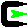

|
 Install or update Cygwin now! |
|
Install or update now! (using setup.exe) |
or | get help on using setup.exe. |
or | find where a package or file lives in the Cygwin release. |
Latest Cygwin DLL release version is 1.7.7-1 |
|
Install or update Cygwin now! |
Installing and Updating Cygwin and its PackagesRun setup.exe any time you want to update or install a Cygwin package. The signature for setup.exe can be used to verify the validity of this binary using this public key. When installing packages for the first time, setup.exe does not install every package. Only the minimal base packages from the Cygwin distribution are installed by default. Clicking on categories and packages in the setup.exe package installation screen will provide you with the ability to control what is installed or updated. Clicking on the "Default" field next to the "All" category will provide you with the opportunity to install every Cygwin package. Be advised that this will download and install hundreds of megabytes to your computer. The best plan is probably to click on individual categories and install either entire categories or packages from the categories themselves. The latest net releases of the Cygwin DLL are numbered 1.n.x, where "n" is currently "7" (e.g., 1.7.7). The 1.n.x version numbering refers only to the Cygwin DLL. Individual packages like bash, gcc, less, etc. are released independently of the DLL. The setup.exe utility tracks the versions of all installed components and provides the mechanism for installing or updating everything available from this site for Cygwin. Once you've installed your desired subset of the Cygwin distribution, setup.exe will remember what you selected so rerunning the program will update your system with any new package releases. |
|
Users of Windows 95, Windows 98, or Windows Me can obtain a legacy version of Cygwin which still runs on these systems here. |
|
post new news |
|
For Cygwin licensing or commercial support, please visit the Red Hat Cygwin Product site.
For all other questions and observations, please check the resources available at this site, such as the FAQ, the User's Guide and the mailing list archives. If you've exhausted these resources then please send email to an appropriate mailing list . This includes observations about web pages, setup questions, questions about where to find things, questions about why things are done a certain way, questions about the color preferences of Cygwin developers, questions about the meaning of the number 42, etc.
Please send notification of technical problems (bad html, broken links) concerning these web pages to the Cygwin mailing list.
Please do not send personal email with "quick questions" to individual Cygwin developers. The Cygwin mailing lists are the places for all questions. Really. I mean it.
Not responsible for errors in content, meaning, tact, or judgment. Live and let live. Toes go in first. I didn't do it. Enjoy. Cygwin DLL and utilities are Copyright © 2000, 2001, 2002, 2003, 2004, 2005, 2006, 2007, 2008, 2009, 2010 Red Hat, Inc. Other packages have other copyrights.
UNIX ® is a registered trademark of the Open Group in the United States and other countries.DO NOT SEND EMAIL TO THIS ADDRESS aaaspam@sourceware.org IT IS HERE ONLY TO COLLECT SPAM. IF YOU SEND EMAIL TO THIS ADDRESS YOU WILL BE AUTOMATICALLY BLOCKED.